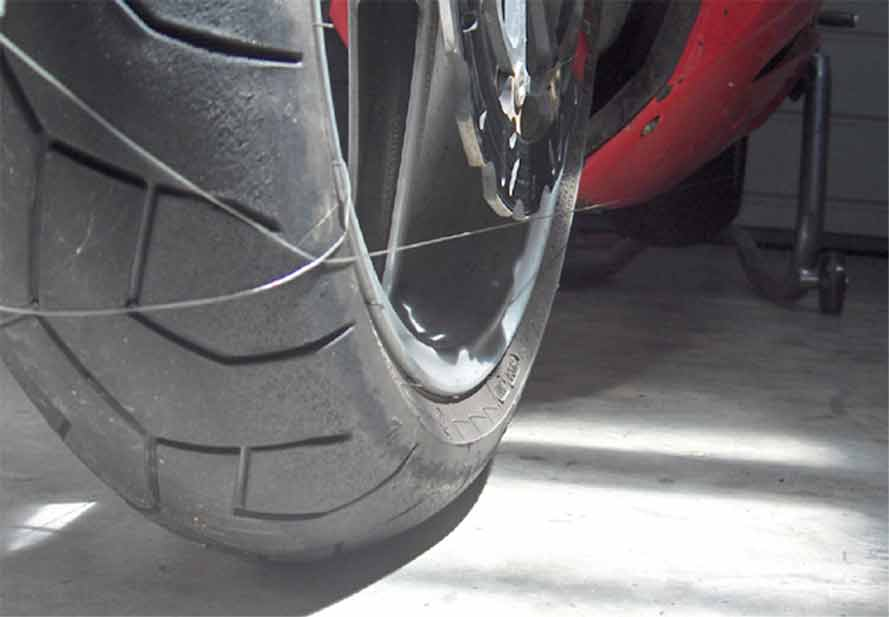
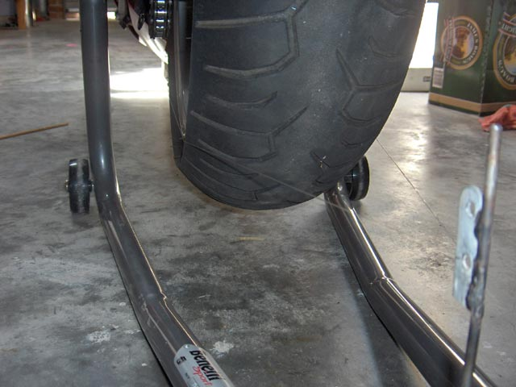
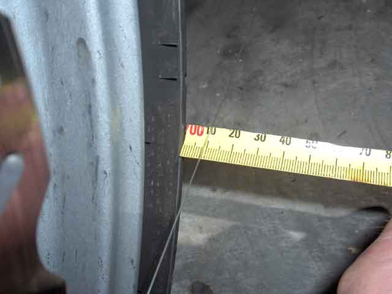
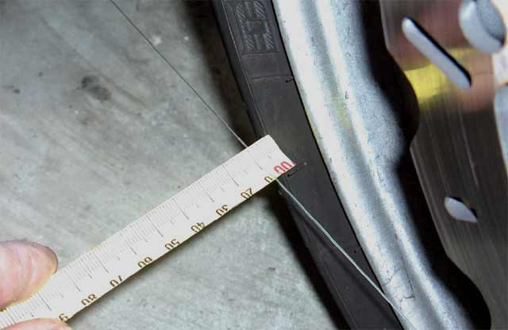
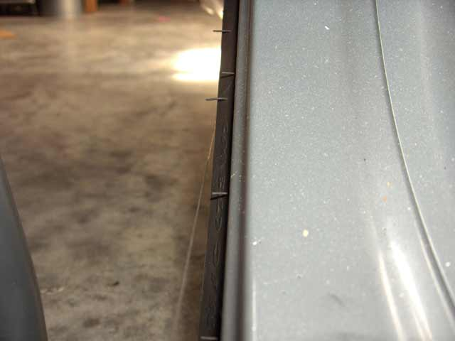
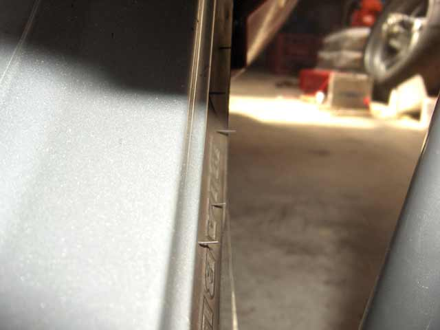

If the chain touches the rear tyre, or a new chain is fitted, the wheel needs alignment. Here's how I do it.
The following has been adapted from "Wrenching With Rob"
1. Make sure the bike is secure on the paddock stand, as you'll be doing a lot of measuring and moving around and you don't want the bike to move during this. Turn the front wheel so it points roughly straight ahead (we'll get it perfectly straight later).
2. Next string some nylon thread from the back of the rear tyre, around the front tyre, and back to the rear tyre again. Make sure that the string isn't touching anything, other than the tyres! If it's touching the centre stand or exhaust, you'll need to move the string up or down along the tire. The higher up along the tyre you can get, the string, the better. At worst, you'll have to remove some parts to gain the necessary clearance.
|  |  |
3. Next, rotate the front wheel so that the gap between the edge of the tyre & string, on each side, is the same.
|  |  |
4. Measure the width of your rear tyre, and cut a piece of wooden dowel to this length, plus about 10mm. Cut a 2-3 mm slot at one end, and another at the other, in the same direction. The string will fit in these slots. Now stick this dowel between the strings, just behind the front tyre and perpendicular to the strings. The strings should be nice and tight and hold the dowel in place. If not, tighten the strings, ensuring the same tension is on each side.
5. Now go back to the rear wheel and look down along the strings: Usually one string will be closer to the front edge of the rear tyre than the string on the other side. Adjust the chain adjusters to move the rear wheel so that the gap to the string lines is the same on both sides. If the dowel is exactly the same length as the width of the rear tyre, the gap will be zero on both sides.
|  |  |
6. Now go back to the front wheel. Remove the dowel and check whether the gap is still the same on both sides. If not, turn the wheel ever-so-slightly to make it the same on both sides. Put the dowel back in place, and recheck the alignment for the rear wheel. You may have to adjust the chain tensioners just a tad now, but once you've done this, your wheels are in-line.
(If you want to check the straightness of the swingarm and the frame, drop a plumb bob down the edge of the rear tyre, and measure any gap at the bottom. Check it on the other side as well. If perfectly vertical, there will be no gap. Now do the same for the front tyre. If the rear was vertical, the front should be as well. If it's not, either the swingarm or the frame is twisted.)